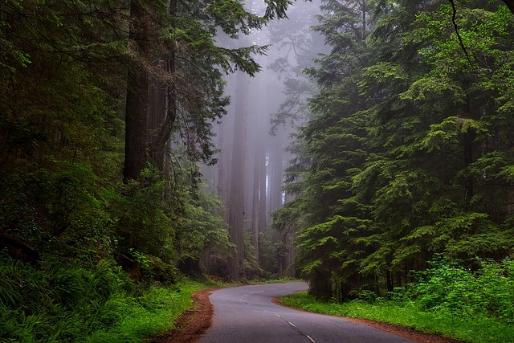

What are protected areas?

Protected areas are geographically defined areas for the preservation and conservation of nature. These areas include parks and wilderness sites.
The full definition is as follows:
A protected area is a clearly defined geographical space, recognised, dedicated and managed, through legal or other effective means, to achieve the long term conservation of nature with associated ecosystem services and cultural values.
With the growth of municipalities and new buildings expanding outward, it is crucial that we have protected areas to ensure that we protect what makes our Earth, Earth! Plants. animals, and the overall beauty of nature need a safe space away from the fast and continuous growth of humans and machines.
Related links

Some links and resources relating to protected areas and the conservation of nature: